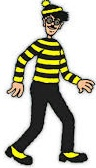
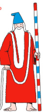

Waldo's at a festival, the music's alive,
He's planning a birthday surprise that's sure to thrive.
There's food and a party to arrange,
But something's gone wrong, and things need to change.
He's searched through the crowds, near the music and lights,
Looked backstage, at the stalls, and through the festival sights.
But his four friends are nowhere in view,
And he's got a birthday surprise that he needs to get through!
Without his friends, the party won't be the same,
So finding them all is the name of the game.
Five hidden characters are waiting to be found,
Somewhere in the festival, scattered around.
Find all 5 characters to complete the mission,
Then unlock your gift and celebrate the occasion!

